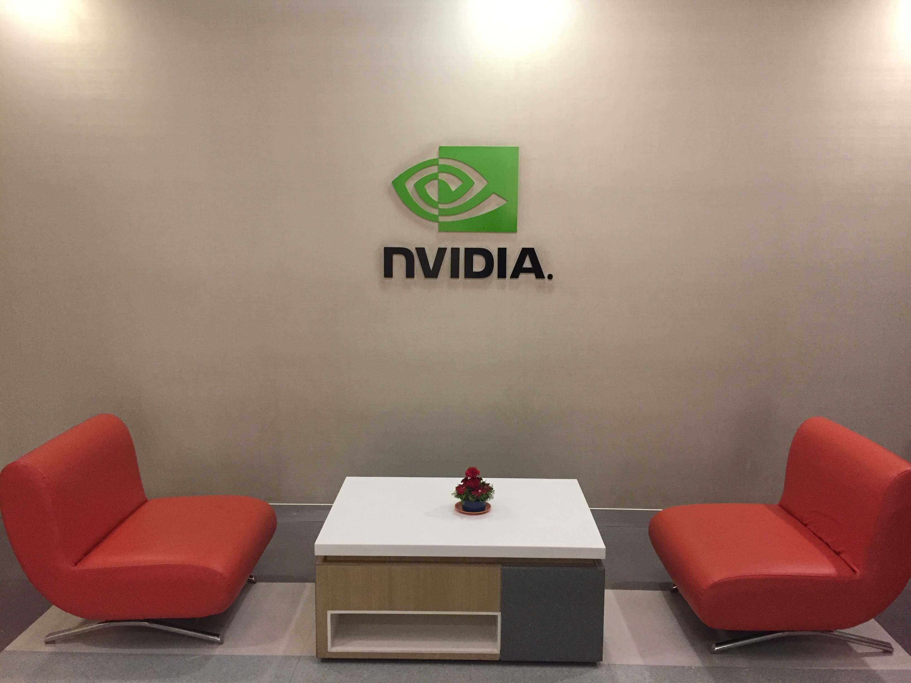
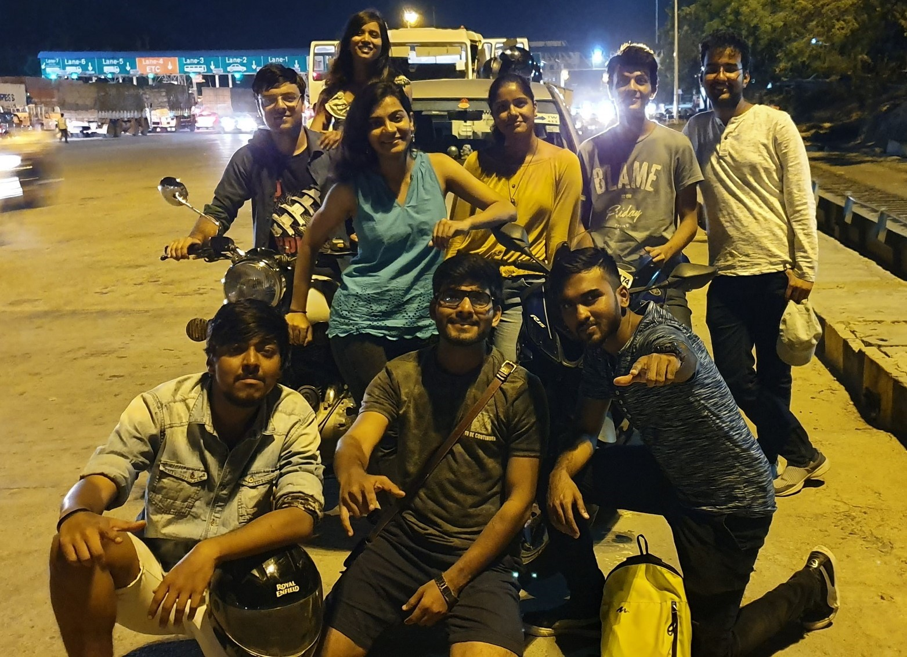
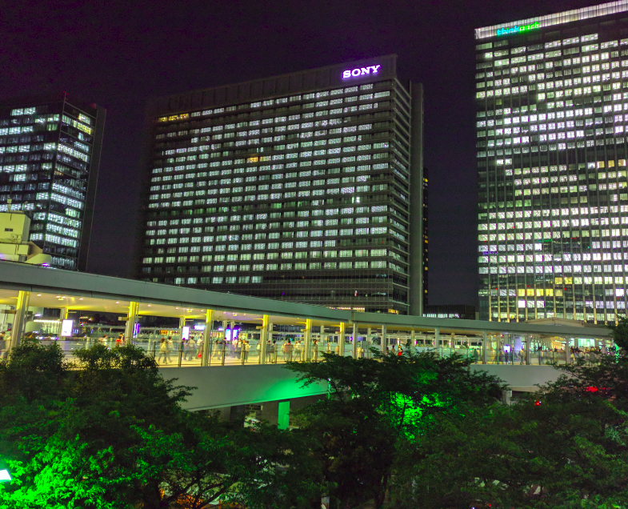
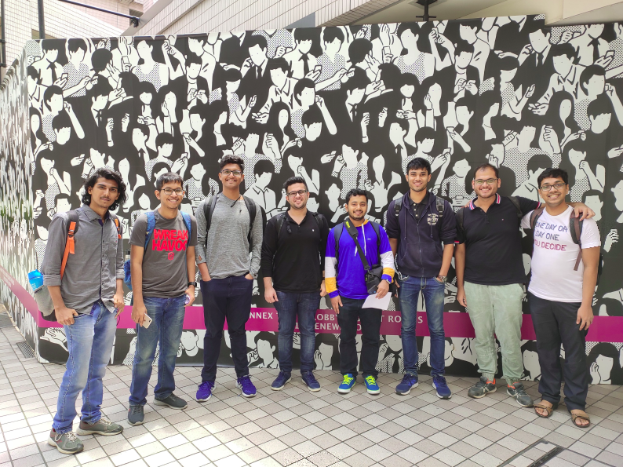
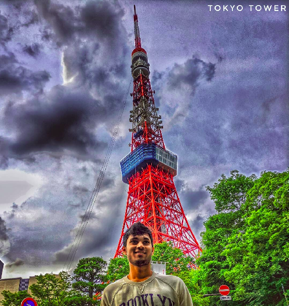
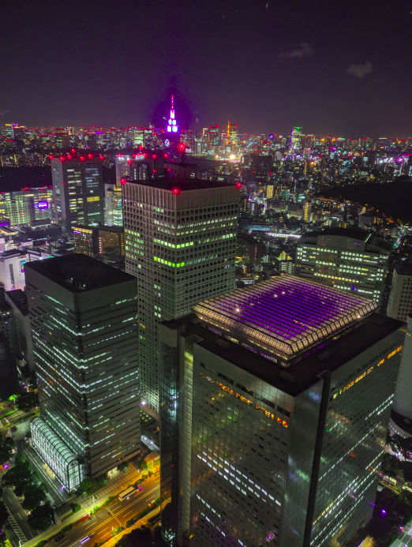
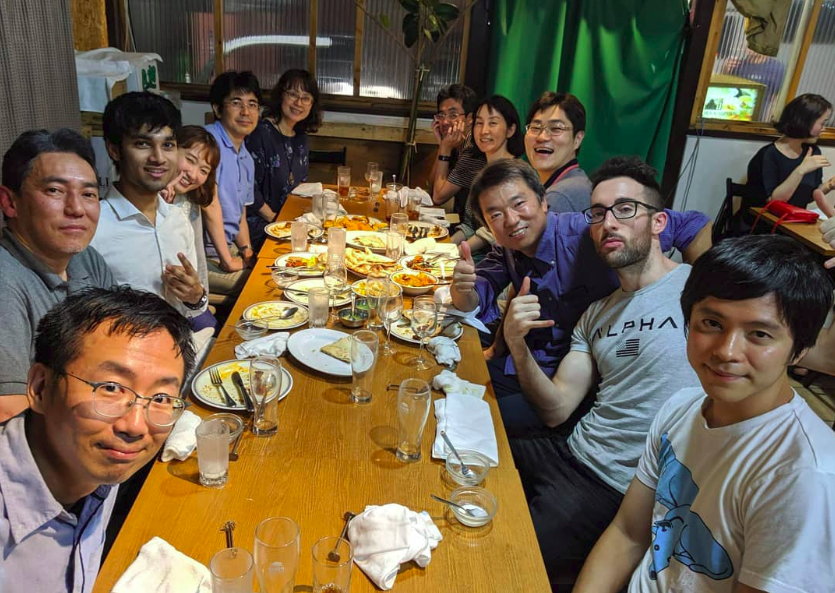
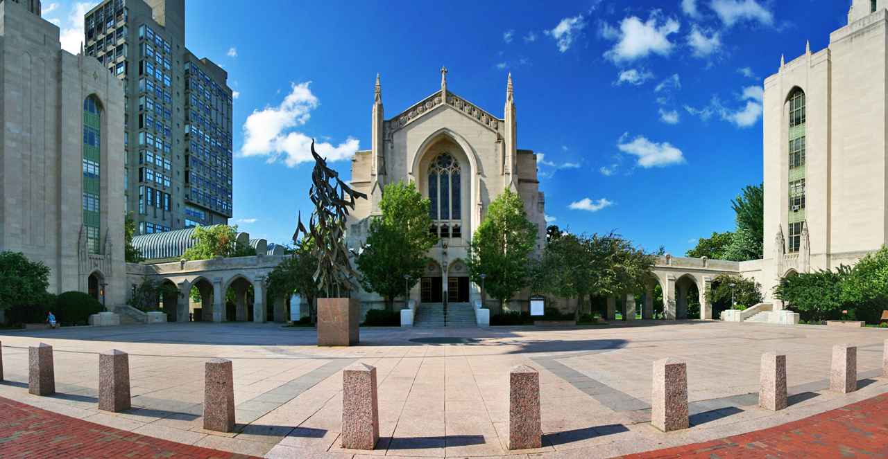

Hello Reader! My name is Neharika. I finished my third year as a dual degree student in the department of Electrcial Engineering and spent a summer as an Interim Engineering Intern at Qualcomm Hyderabad. Qualcomm is the compnay that makes the ubiquotous Snapdragon processors found in smartphones and the company that is often associated with the 5G technology. It has 170 offices across 30 countries. Founded as a communications company, it now works on areas as diverse as advanced multimedia technolgies and self-driving cars, in addition to making super efficient chipsets.
Getting There
University Internship vs Company Internship? I decided to sit for companies with the thought that this would be last opportunity to experience the corporate life before placements and with a distant possibility of a PPO. Qualcomm is one of the first few electrical core companies that comes for internships through PT Cell, is a company that slightly prefers and also offers PPOs to Dual Degree students. Their JAF doesn’t annouce specific projects and tends to be a general overview of the company and skills that they are looking for in a candidate. Their IAF opens in the first week of August and the final results are out by the end of August. They have two profiles – Hardware and Software and you give a test in either one of the domains. Most software postings being in Hyderabad and most hardware ones being in Bangalore. The selection test has questions on programming, digital, analog and signals and time tends to be a key factor. A decently big shortlist based on the test is announced and two rounds of interviews are conducted. The first round is a one-on-one technical interview testing you on basic concepts of electrical engineering, programming and a few puzzles. And before the 20 minute odd interview wraps up, they ask to take them through your project and other technical activities that you have undertaken breifly. The next round is a HR interview where they test your general communication skills and your enthusiasm to work with the company. They also ask for a preference of field of work that you would be interested in if you were selected although they make no promises that you will get to work in this area. And generally being selected for the HR round means you already have a foot in the door.
A word of caution for the internship process, select what companies you want to apply for wisely. Don’t be too hopeful about a company and ditch opportunities that come your way in the mean time or don’t be too pessimistic that you accept the first company that comes on campus. Talk to your seniors but don’t take their word at face value. Think for yourself about what you want. Third year internship are not the make or break points in your lives but they can help you identify which direction you want to go or NOT want to go.
The Work
With offices spreads across 6 buildings in the IT Hub of Hyderabad, they have loads of teams working on a variety of things albeit mostly software. A company with an open door policy, you have cafeteria in every building, coffee lounges on each floor, and various popular eateries (Starbucks, Keventers, Dominos, Subway and the like) in some buildings. Equipped with a gynasium, you can spend your after work hours working on your fitness. You won’t have to adjust your wardrobe for work either. Turning up in a neatly ironed pair of shirt and trousers in considered overdressed. The working hours are super flexible and all they care about is getting the work done. Also everybody around you is always willing to help you even if they are not in the same team as yours.
After a day of orientation, you are alloted your mentors, managers and eventually your project. Although your team allotement might seem random sometimes, you generally have a choice while picking the project you want to work on. I worked with the Camera Systems team and unfortunately can’t talk more about it due to my Non-Disclosure Agreement. I was the only intern on the project that I was working on. While this gave me the freedom to structure the work and schedule the way I wanted, it also left me wanting a slightly better team experience. Most tasks and projects alloted here at Qualcomm are individual. It’s the best place to work in if you working on 5G technology or any communcation related technology but there will probably be better places if you are looking for say Machine Learning projects. In addition to our project, we also had weekly talks about what is going on elsewhere in the company and some of the latest projects that they are working on.
City and Travel
Although stipend is a little on the lower side, the company pays for travel, accomodation and food. You sort of save your entire stipend with the acco being so close to your place of work. Summers can be harsh compared to the moderate Mumbai weather but it is way drier and an air conditioned office and accomodation compensates for the heat. It is not a traveller’s paradise and the heat will kill half your enthusiasm but the later part of your stay gets more pleasant with evening showers breaking the heat of the day. You will certainly get a feel of the Deccani traditions, architecture and cuisine. Don’t forget to try Haleem, a rich nutritious stew made of wheat or barley, lentils and meat or vegetables, if you are in the city during Ramzan. And beware it might have bones if you are having the non-vegetarian one despite looking soft and gooey.
Tldr: A great company with decent perks if you are looking for a core electrical engineering intership in the domain of communications and signal processing with a slight preference for dual degree students. Thank you for reading through the piece. If you have further questions, feel free to ping me.
Hey everyone! I interned at NVIDIA, Bangalore during this summer and would like to share my experience. People have a prejudice that NVIDIA implies “Graphics” which is not true. Over the last decade, NVIDIA has focused its interest in a variety of fields like self-driving cars, real-time ray tracing, special-purpose CPUs, of course AI and some more areas.

Internship Season
I was interested to do an internship in a digital profile which offered a good balance of hardware and software. NVIDIA takes interns only for hardware profile. Though, it is entirely possible that the work you are offered is software-based but it will be in touch with hardware aspects.
The selection procedure involved a CPI-based shortlist followed by an interview. The interview was about 40 minutes in duration and was completely technical. Initially, the interviewers accentuated the projects on my resume then they moved on to some DSA related questions and digital logic questions.
P.S. They don’t really prefer taking dual degrees for interns.
Project Allocation
There are a lot of exciting projects which the company plans to give out to the summer interns. But the sad part is that you don’t get to choose the project of your interest and it is entirely possible that the allotted project doesn’t align with your interest/skills. For example, one of my co-interns was allotted a project on graphics and deep learning contrary to the fact that he had no experience even on the lowest scale in that topic.
My Work
The topic of my project was “Performance Estimation Using Deep Learning Simulator” and my work was on this simulator which is a purely software-based tool that does not any task on actual hardware but models it. The hardware of concern here is single and multi-GPU topologies. The motivation behind this simulator is to estimate the time, hardware resources, throughputs, efficiencies etc. that would be required for the training/inferencing of the neural network.
I had to run several simulations, analyze the detailed report which popped out then dive into the specific tasks and their modelling to verify if the numbers agreed with what was seen on silicon. And at some point, if the numbers were too off then I worked on improving the modelling after referring to several texts.
Work Culture
NVIDIA nurtures a quite open work culture. There is nothing like “fixed/minimum” number of work hours per day instead it is anytime come and anytime go policy.
Each intern was allotted a mentor, whom he/she could approach anytime for any doubt and a manager, with whom there used to be a weekly sync-up meet. Of course, the other team members could also be approached and they would be really cooperative and helpful.
I had a good corporate experience about what I had expected before joining because in NVIDIA, apart from the workload, an intern was treated no differently than an employee. I used to have one to one meetings with a regular employee in Shanghai, right from the second week of joining and he was always very responsive.
Facilities Provided
NVIDIA provided an entire two months stay at a hotel about 4 km from the office but this was just for the interns. To and fro travel service, lunch (not good though) and evening snacks is provided free of cost to all the employees. Of course, a pantry which many times I would visit just hoping to find another co-intern to cut some time :P.
NVIDIA believes in the best and efficient quality of work and that tangibles should never be the limiter. So, it tries to provide the latest laptop to everyone, extended displays as required and also an “ergonomically” designed chair to minimize stress from sitting for too long.
Life outside the Office
My office routine was 9 am (making use of the free travel service) to 5.30 pm and sometimes 8:30 pm (if work lagged). I and my friends used to go out just for dinner on weekdays. Since dinner had to be self-arranged, we preferred to go out and try different cuisines every day because there were plenty of restaurants (with Zomato Gold :P) at walking distance from the hotel.
There aren’t many good places to visit in Bangalore but some places like Cubbon Park, Samsung Opera House are worth a visit. Also, a visit to Nandi Hills early in the morning is justifiable.
Most of my weekends were spent doing get-togethers with different groups of friends. Other activities would include going to a mall, bowling, movies or a faraway restaurant.
I spent one entire weekend going to Coorg, a hill-station kind of place about 250km from Bangalore on the west.
I went on a road trip for a day to Hogenakkal Falls with co-interns on one of the weekends.
Farewell
The HR took all the interns to Smaaash for bowling, dancing and then for dinner. Apart from a common outing, almost every team (with mostly one intern) used to go out for lunch.
I think the overall experience was great and satisfying. NVIDIA is a great company to work in.
Sony - The Why and How?
At the beginning of the internship season, I was one of those who was clueless as to what I wanted to do ahead in life and so also clueless about what type of internships I should apply for. Luckily, I knew what I didn’t want to do for sure and I started from there.

I knew after my DD from IITB, I didn’t want to go on and do research or a PhD in any field. I knew I didn’t want to study more in life. This straightaway ruled out Univ-interns. Being born and brought up in Mumbai and it being so close to my heart, I knew I didn’t want to leave this city and intern or later go on to work in any other Indian city like Benglaru or Gurgaon. This didn’t leave me with much options. Also note, being a DD student on its own ruled out a lot of companies for me. My best bet was to try for a company intern with an abroad place of posting. Sony, the first such company to open for an Elec DD student, was naturally my go-to choice. Afterall, who wouldn’t like to go to Japan, one of the most technologically advanced and safest countries, birthplace of Pokemon, anime and childhood cartoons like Shinchan and Doraemon which all of us grew up watching. If you are still not sold, just the fact that you would be working in the company that made the PlayStation, something which all of us spent our childhoods using, should be enticing AF.
Now that I knew my so called ‘Dream Company’, the question was ‘HOW?’. It turned out the selection process, similar to other Japanese firms, involved writing Essay type answers(SOP) to 3 questions. On the basis of that, the company would shortlist you for the interview. Sony opened up 7 positions as 7 different IAFs and I signed for the 3 which related best to my profile. I put in some effort, incorporated some valuable advice from seniors and wrote my SOP. There are a lot of points to note while answering these questions, one of them being NOT to use high level English but to just express yourself in the most simple and concise way you can (The Japanese are very poor in English). Out of 180 applications in one of their R&D IAFs, I found a place in the shortlist at the 1st waiting position. The long duration of time between the shortlist and interviews helped me get promoted to the final interview list. The interview was held via Skype, about 25-30mins long, tested my technical knowledge superficially and was mainly HR. I was lucky enough to have done a course project in one of my labs which seemed to resemble the project in that IAF to some extent, which I believe immensely helped the cause.
If you’re wondering whether I had parallelly applied for any other internships, then yes, I had done. There was always a huge luck factor involved with Sony and one needed to be realistic rather than playing valiant and going all in for it. Luckily(I say so now), I accidentally missed my Texas Instruments test and I didn’t have to face the dilemma of whether to sit for its interviews or to play truant and risk waiting for Sony’s interviews that were to be held later. They say, ‘Everything that happens, happens for good’.

The Work
After the selection, the Visa and other paperwork was fairly simple and was well assisted by Sony. The 10 week internship started soon, with me sitting on the airplane, both, super excited and with a sense of anticipation and nervousness as to how these 10 long weeks were going to span out.
On my first day as an R&D intern in Sony, I met my mentor, my manager and the team which I was going to work with. They briefly explained me the project and my internship goal, which frankly, seemed extremely daunting to me at first. My humble manager, a 47 year old former national level Baseball player and an avid Pokemon Go fan, trying to speak as much correct English as possible said - “We hire you to start and complete this project for us. We don’t know much about it…..” Such expectations and belief from just a 3rd year undergrad, less than half the mean age of all the people sitting in the room, left me both terribly anxious and extremely eager to take up this challenge.
The next day, I arrived at my seat at 9:32am, and I was told in the most polite and indirect way ever possible, that I was late by 2 minutes and that I should make efforts to come early tomorrow onwards. The plus side of their this obsession with punctuality was that they would not allow me to work after 6:00pm. Yes, no overtime and no working on weekends...! Because if I did, they would have to legally pay me for the overtime work on an hourly basis. There, that’s Japan for you.
My project involved applying Signal Processing and Machine Learning techniques to estimate and measure certain vital characteristics of the most complex and incredible machine - the human body. In the first 2 weeks of the internship, I ended up reading more research papers than I ever thought I would in my entire student life. After gathering sufficient knowledge about the field, I was asked to replicate one of the research papers. The rest of my 8 weeks were spent on coding, testing and improving the results on MATLAB. Concepts and things which I vaguely remembered learning sometime in some course in Insti surely helped. The people in my team were also very approachable, supportive and gave valuable advice now and then. I was supposed to report my work daily to my mentor and on a weekly basis to my team members. Also I was supposed to give a midterm and a final presentation to all my section members mentioning my progress and achievements until that time. Speaking slowly and indicating all the important points on the slides was enough to ensure everyone understood (Remember, the Japanese are very poor in English). In the end, achieving the internship goal turned out to be pretty manageable and my team was pleased with my efforts and my little contribution to their work. This little sense of satisfaction and content on completing the work assigned and fulfilling the trust they put in was simply special.
Tokyo - The City
Tokyo is one of the cities with the highest standard of living and things can get a bit expensive at times. Thankfully, the accommodation and all business travels were covered by Sony and food was the only thing I needed to manage on my own. The entire city is very well connected by a network of metro lines and that is the go-to mode of transportation for 90% of the locals - thanks to the exorbitant cab fares and outrageous parking charges all over the city. That means during peak hours, the trains get as crowded as they do in Mumbai and having to skip 2-3 trains is very normal. Thankfully my office was at a walking distance and was able to escape the crowd more often than not. I found myself switching numerous metro lines and walking at least 15kms on my ‘sight-seeing’ trips over the weekends.

Perfectly safe to drink tap water and the overly cheap alcohol rates ensured I didn’t stay thirsty during the internship. Drinking beer and wine along with meals is a common custom in Japan. Post dinner, it is not surprising to see men dressed in suits and expensive accessories to be lying on footpaths, passed out, with their bags, laptops and mobile phones all over the place. What is surprising is that there is no theft and you can expect to find whatever you forget, exactly where it was, safe and secure. 5-6 year old kids safely go to school alone using public transport. I could enjoy walking through narrow, dark, isolated streets at 3am without any fears. This notion of safety would probably be the thing I miss the most back here in India.

Tokyo is also one of the most populated cities in the world and is home to the busiest metro station, and the busiest street crossing on the planet. On a clear day, the beautiful Mount Fuji, Japan’s tallest mountain and an active volcano site, is visible from any of the tall observatories in the city. Pokemon, anime, and robot cafes, vending machines, capsule hotels, temperature controlled electronic toilet seats, bullet trains, etc are somethings simply unique to this country. The ‘Kawai’ culture, the nightlife and the adorable dogs were something that kept me entertained throughout my stay. In spite of hogging on ramen, sushi, noodles, chocolates all day and having an 8hr desk job, I still somehow magically ended up losing 7kgs in those 10 weeks.
The End
I believe the 3rd year internship is a wonderful opportunity for each student to explore the various fields out there and inspect his/her likes/dislikes. I would urge everyone to put in efforts to get a good intern, where you best think you would like to work later on in life. Sitting through the stressful placements is not something that one would want to happily experience. Securing a PPO through your intern will ease off your final year stress and you can enjoy and explore the Insti life at its best.
That all said, nothing beats living in your own native country and city, and I was as excited to return back to Mumbai as I was to visit Tokyo. The intern didn’t only help me gain a lot of valuable knowledge and confidence but also left behind plenty of memories to cherish for a lifetime. Most importantly, it taught me enough Japanese to easily connect with and ask (out) the cute SHIRUCAFE volunteers for coffee :p

I am Deepak Gopalan. I spent the summer after my junior year on a research internship at Boston University. As someone who is really into core elec and wants to pursue a career in research, going for a Univ intern was a no-brainer for me. At the time I was applying for internships, I had gotten really into IC design, and so I wanted to go for an internship that would let me hone my circuit design skills.

I had applied to and got provisional acceptances from some of the circuits groups from MITACS, but when I learnt that there was actually a circuits Prof. from the US hiring an intern through PT Cell, I was really excited! I read up a bit about the Prof. and found out that she was quite new. But I saw that throughout her career, she had been guided by some of the pioneers in this field. I had also seen in my last year internship, that younger guides tend to be more hands-on when it comes to research, and that was something I really valued. The original JAF was about a signal processing project, but during the interview, I asked if I could be involved in other projects of my interest and learnt about other amazing ongoing projects. In the end, it worked out really well for me.
Stay in Boston
I subletted a room for the two months. Rent in Boston is quite expensive compared to other places in the states, but I found one of the cheaper ones. My apartment mates were all from India, and were mostly Masters students in different universities. As a vegetarian, food is always a problem, but thankfully many of my apartment mates were also vegetarians, and we took turns making food. I finally learnt to make my own food from those guys! Plus, having a bunch of Indian guys and girls around, all just a few years elder to me, meant that I could get a lot of "fundae" from them while also having great company to chill with on weekends!
Project Description:
During the internship, I was working on two different projects simultaneously.
The first one was on compressive sensing used in spectrum sensors and the other was on ingestible capsules to detect bleeding in the GI tract.
Compressive Sensing for Spectrum Scanners:
So all the devices that use wireless communication, transmit and receive data in the RF spectrum.
With a surge in the number of these devices and with a limited spectrum, congestion has become a significant issue.
The primary, licensed user of the spectrum might not be using the spectrum at all times.
One way to ease the spectrum congestion is to have secondary users use the spectrum when the primary user is not using it.
This is called dynamic spectrum sharing. To do this, we need sectrum scanners to identify unused spectra.
My role was to create models for different spectrum scanners.
Some of these models were compressive sensing based, which is basically sub-nyquist sampling and recovery of sparse signals.
The main purpose of the project was to assess the vulnerabilities of the different spectrum scanners and how easy/hard it is for an attacker to make the scanner unusable.
Ingestible Capsule:
The other project I worked on was an ingestible capsule for detection of GI bleeding. Basically there are bacteria that are genetically modified to show illuminiscence in the presence of a chemical target such as blood. The emitted light is detected by a photodiode or a phototransistor and is used to determine the level of bleeding.
This is a huge project, with multiple groups involved. Apart from our circuits group from BU, there were groups from MIT who were working on the bacterial genetics part and the mechanical part of the capsule. The circuits part might sound really simple, even like an EDL level project, but the currents that we are trying to detect are at fA range! Also, the whole system is inside the body, so powering it is a challenge. The circuits need to operate at a nW power level! This makes the whole design really challenging.
I was working on one of the components needed for the chip, the low power oscillator. I was also involved in the whole system level design. This project was a huge contrast from the previous one. That was a relatively small project, with only me and the Prof working on it, this was a huge, inter-diciplinary project, with work moving really slowly, but has a much larger impact when its complete. Plus I got to attend meetings at MIT and discuss challenging research problems with some of the best minds in the world, which was also amazing by itself!
Overall Experience: Overall, the internship was an awesome experience. I got to be part of some really exciting projects, which re-ignited my whole academia enthu. After this, I am really looking forward to going full time into research in the near (hopefully!) future, and I would encourage anyone from elec to go there for an internship next year!
Back to Top